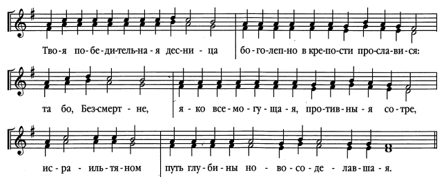
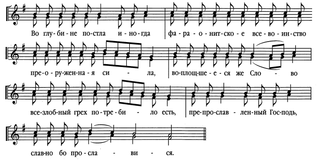
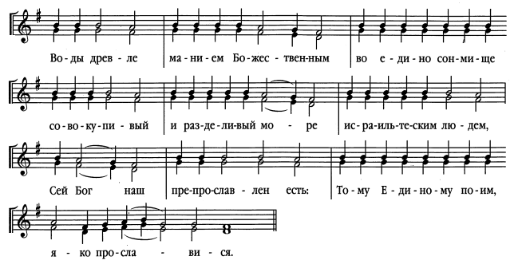
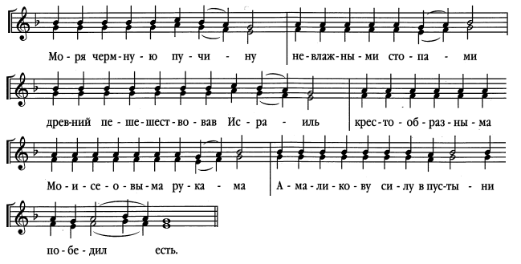
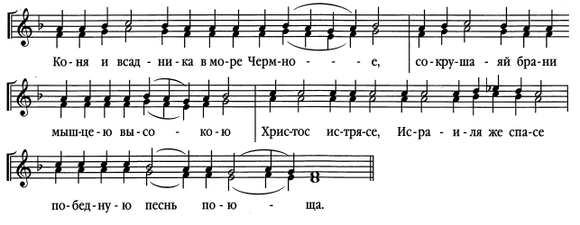
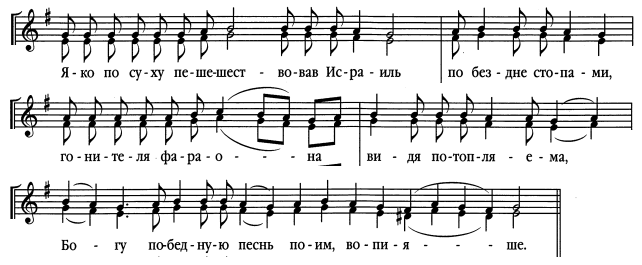
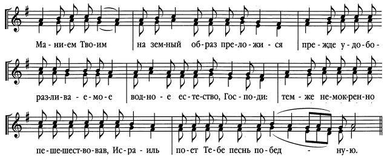
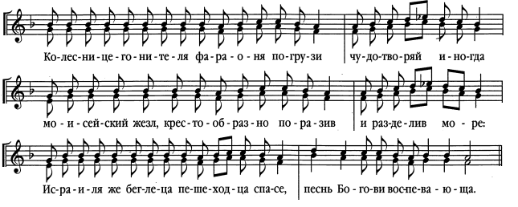

Глaс 1
Пе́снь 1
Ирмо́с: Твоя́ победи́тельная десни́ца боголе́пно в кре́пости просла́вися: та́ бо безсме́ртне, я́ко всемогу́щая, проти́вныя сотре́, изра́ильтяном пу́ть глубины́ новосоде́лавшая.
Глaс 2
Пе́снь 1
Ирмо́с: Во глубине́ постла́ иногда́, фараони́тское всево́инство преоруже́нная си́ла, вопло́щшееся же Сло́во всезло́бный гре́х потреби́ло е́сть, Препросла́вленный Госпо́дь, сла́вно бо просла́вися.
Глaс 3
Пе́снь 1
Ирмо́с: Во́ды дре́вле, ма́нием Боже́ственным, во еди́но со́нмище совокупи́вый, и раздели́вый мо́ре изра́ильтеским лю́дем, Се́й Бо́г на́ш, препросла́влен е́сть: Тому́ Еди́ному пои́м, я́ко просла́вися.
Глaс 4
Пе́снь 1
Ирмо́с: Мо́ря чермну́ю пучи́ну невла́жными стопа́ми, дре́вний пешеше́ствовав Изра́иль, крестообра́зныма Моисе́овыма рука́ма Aмали́кову си́лу в пусты́ни победи́л е́сть.
Глaс 5
Пе́снь 1
Ірмос: Коня́ и вса́дника в мо́ре Чермно́е, сокруша́яй бра́ни мы́шцею высо́кою, Христо́с истрясе́: Изра́иля же спасе́, побе́дную пе́снь пою́ща.
Глaс 6
Пе́снь 1
Ірмос: Я́ко по су́ху пешеше́ствовав Изра́иль, по бе́здне стопа́ми, гони́теля фарао́на ви́дя потопля́ема, Бо́гу побе́дную пе́снь пои́м, вопия́ше.
Глaс 7
Пе́снь 1
Ірмос: Ма́нием Твои́м на земны́й о́браз преложи́ся, пре́жде удоборазлива́емое водно́е естество́, Го́споди: те́мже немо́кренно пешеше́ствовав Изра́иль, пое́т Тебе́ пе́снь побе́дную.
Глaс 8
Пе́снь 1
Ірмос: Колесницегони́теля фарао́ня погрузи́, чудотворя́й иногда́ Моисе́йский же́зл, крестообра́зно порази́в, и раздели́в мо́ре: Изра́иля же беглеца́, пешехо́дца спасе́, пе́снь Бо́гови воспева́юща.
Глaсъ №:
Пёснь №

Їрм0съ: ТвоS побэди1тельнаz десни1ца / бGолёпнw въ крёпости прослaвисz: / тa бо безсмeртне, / ћкw всемогyщаz, проти6вныz сотрE, / ї}льтzнwмъ // пyть глубины2 новосодёлавшаz.
Глaсъ в7:
Пёснь №

Їрм0съ: Во глубинЁ постлA и3ногдA, / фараwни1тское всев0инство преwружeннаz си1ла, / вопл0щшеесz же сл0во / всеѕл0бный грёхъ потреби1ло є4сть, / препрослaвленный гDь, // слaвнw бо прослaвисz.
Глaсъ G:
Пёснь №

Їрм0съ: В0ды дрeвле, / мaніемъ б9eственнымъ, / во є3ди1но с0нмище совокупи1вый, / и3 раздэли1вый м0ре // ї}льтєскимъ лю1демъ, / сeй бGъ нaшъ, / препрослaвленъ є4сть: // томY є3ди1ному пои1мъ, ћкw прослaвисz.
Глaсъ д7:
Пёснь №

Їрм0съ: М0рz чермнyю пучи1ну / невлaжными стопaми, / дрeвній пэшешeствовавъ ї}ль, / кrтоwбрaзныма мwmсeовыма рукaма // ґмали1кову си1лу въ пустhни побэди1лъ є4сть.
Глaсъ є7:
Пёснь №

Їрм0съ: КонS и3 всaдника въ м0ре чермн0е, / сокрушazй бр†ни мhшцею выс0кою, / хrт0съ и3стрzсE: ї}лz же сп7сE, // побёдную пёснь пою1ща.
Глaсъ ѕ7:
Пёснь №

Їрм0съ: Ћкw по сyху пэшешeствовавъ ї}ль, / по бeзднэ стопaми, / гони1телz фараHна / ви1дz потоплsема, / бGу побёдную пёснь пои1мъ, вопіsше.
Глaсъ з7:
Пёснь №

Їрм0съ: Мaніемъ твои1мъ / на земнhй w4бразъ преложи1сz, / прeжде ўдоборазливaемое / водн0е є3стество2 гDи:/ тёмже нем0креннw пэшешeствовавъ ї}ль, // поeтъ тебЁ пёснь побёдную.
Глaсъ }7:
Пёснь №

Їрм0съ: Колесницегони1телz фараHнz погрузи2, / чудотворsй и3ногдA / мwmсeйскій жeзлъ, кrтоwбрaзнw порази1въ, / и3 раздэли1въ м0ре: / ї}лz же бэглецA, пэшех0дца сп7сE, // пёснь бGови воспэвaюща.
Глaс 1
Пісня 1
Ірмос: Твоя переможна правиця боголіпно у кріпості прославилася, вона, Безсмертний, як всемогутня противників знищила, а ізраїльтянам у глибині нову путь проклала.
Глaс 2
Пісня 1
Ірмос: У глибині знищила колись фараонове все воїнство потужна сили, а втілене Слово всезлобний гріх загладило. Препрославлений Господь, славно бо прославився.
Глaс 3
Пісня 1
Ірмос: Той, що колись велінням Божественним в одне вмістилище води зібрав і розділив море для ізраїльських людей, Він є препрославлений Бог наш. Йому єдиному співаймо, бо Він прославився.
Глaс 4
Пісня 1
Ірмос: Моря Червоного безодню сухими стопами древній перейшовши Ізраїль, хрестовидними Мойсеєвими руками Амаликову силу в пустелі переміг.
Глaс 5
Пісня 1
Ирмо́с: Коня і вершника у море Червоне, долаючи ворога силою могутньою, скинув Христос, Ізраїля ж спас, що переможну пісню співав.
Глaс 6
Пісня 1
Ирмо́с: Як по суші, перейшов Ізраїль по безодні стопами, бачачи, як гонитель фараон потопляється; пісню перемоги Богові співаймо, взиваючи.
Глaс 7
Пісня 1
Ирмо́с: Велінням Твоїм, Господи, водяне єство, що раніш легко розливалося, твердою землею стало, тому Ізраїль, як по сухому перейшовши, пісню перемоги Тобі співає.
Глaс 8
Пісня 1
Ирмо́с: Фараона з колісницями чудотворний жезл Мойсеїв колись потопив, навхрест ударивши й розділивши море; Ізраїля ж спас — втікача, пішоходця, що співав пісню Богові.